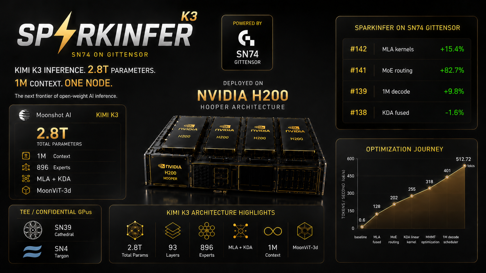

Kimi K3 — 2.8T parameters, 896 routed experts, hybrid MLA + KDA attention — running on one 8× H200 node.
$ bench/scripts/kimi_k3_run.sh "Q: What is the capital of Japan? A:" 24 0,1,2,3,4,5,6,7
prompt : Q: What is the capital of Japan? A:
ids : 48 25 5071 387 276 10484 318 10417 30 401 25
model : 93/93 layers, vocab 163840, 8 stage(s)
generated text: Tokyo. Q: What is the capital of France? A: Paris. Q: What is the capital of Germany?Correct answers, and it picks up the few-shot pattern on its own. Greedy argmax — no chat template, no sampling parameters.
8× H200, UD-IQ1_S, ctx 128, identical weights and token ids on both sides. Accuracy against
the llama.cpp reference: top-1 100%, top-5 100%, mean KLD 4.05e-03. Every number
traces to a committed JSON in bench/results/; CI refuses a pinned baseline that does not.
--devices 0-7 proves nothing on its own. Three independent signals from one run:
rank 0: device 0, experts [ 0,112) rank 4: device 4, experts [448,560)
rank 1: device 1, experts [112,224) rank 5: device 5, experts [560,672)
rank 2: device 2, experts [224,336) rank 6: device 6, experts [672,784)
rank 3: device 3, experts [336,448) rank 7: device 7, experts [784,896)A load check proves the bands tile exactly — 16351 checks, every byte of a sharded tensor claimed by exactly one rank. A gap silently drops an expert; an overlap double-counts it. Both leave a model that runs and emits fluent text.
02:49:43 0:73567MiB 1:4MiB 2:4MiB 3:4MiB ...
02:50:28 0:125999MiB 1:125999MiB 2:125999MiB 3:8743MiB ...
02:51:59 0:125999MiB 1:125999MiB ... 6:125999MiB 7:118653MiB~123 GiB per card. The model is 553 GiB; no single H200 holds 141.
collectives/token 92 — one all-reduce per MoE layer, 93 layers minus the leading
dense block. A missing reduce leaves a partial sum; an extra one multiplies a complete tensor by
tp_size. Neither crashes, so the count is asserted rather than eyeballed.
The design decision that makes it customizable: the layer is split at exactly the points a collective belongs, and the driver owns the interleaving.
for each layer:
ranks 0..7 ──► Attn attention, all ranks in parallel
ranks 0..7 ──► FfnPartial router → routed_down → THIS RANK'S experts
│
ALL-REDUCE 3584-wide, sums the 8 partial expert sums
│
ranks 0..7 ──► FfnFinish routed_norm → routed_up → shared expertsEvery rank runs the same router over the same replicated weights, so all eight agree on the same top-16 experts — then each evaluates only the ones it holds and contributes zero for the rest. The all-reduce turns eight partial sums back into exactly what one GPU with all 896 experts would have computed. Verified to 1.127e-07 of peak: below float32 epsilon, one ulp.
reduce() callback fired mid-forward deadlocks — measured on this node, hung at the
first collective with no output. The driver has to own the interleaving.
ffn_routed_norm is an RMS
norm, and rms_norm is not linear: rms_norm(Σ partial) ≠ Σ rms_norm(partial). The sum
has to complete before it. Getting this wrong is invisible — the model stays fluent.
Each of these is a seam, not a rewrite:
| Knob | What it changes |
|---|---|
ShardPolicy | ExpertsOnly (experts banded, attention replicated) vs Full |
SPARKINFER_TP_BACKEND | nccl · peer-oneshot · multimem — all three validated on 8× H200 |
| shard rules | per-tensor Row / Col / Expert / Replicate, 230 CPU tests |
| expert bands | contiguous today; strided would trade load balance for locality |
| reduce points | K3LayerPhase — move a collective by moving one call |
| dtype | f32 today (K3's residual stream is f32 by design); bf16 path exists |
The shard math is CUDA-free and unit-tested without a GPU — 4972 checks on the band arithmetic, 230 on the tensor→rule map, 44 on backend selection. TP bugs do not live in the collective (NCCL is correct); they live in the band arithmetic, which is exactly the part you can verify on a laptop before burning node hours.
| Property | Value |
|---|---|
| Parameters | 2.8T total · typed 2.8T.A50B |
| Layers | 93 — 24 MLA (full attention) + 69 KDA (linear, recurrent) |
| MoE | 896 routed experts, top-16, 2 shared · latent MoE at 3584, expert FFN 3072 |
| Attention | MLA: q_lora 1536, kv_lora 512, NoPE-only, sigmoid output gate |
| Activation | situ replaces SwiGLU everywhere |
| Extras | Cross-layer residual attention, block_size 12 |
| Area | State |
|---|---|
| Decode speed | 5.2× slower than llama.cpp |
| TP scaling | ~1.1× — attention is replicated, so it is the serial term |
| Prefill | None. Prompt ingestion is one forward per token |
| Accuracy vs llama.cpp | KLD 4.05e-03, above the 1e-5 bar |
| Quant coverage | UD-IQ1_S measured; UD-Q2_K_XL (the target) not yet run |
| Vision | mmproj wired, no image benchmark |
ShardPolicy::Full — sharding attention rather than replicating it — is the next
lever, and is deliberately declared but not enabled: the loader would shard weights the executor
still indexes at full width.